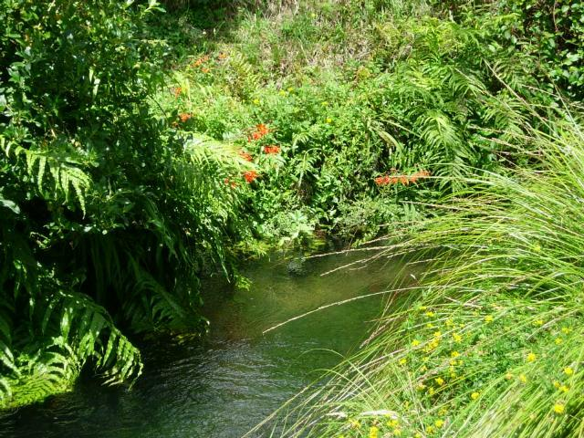
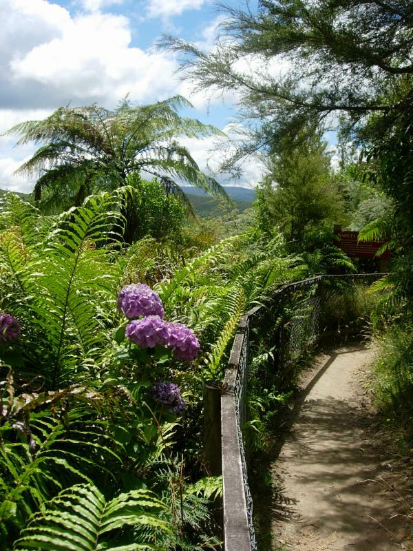
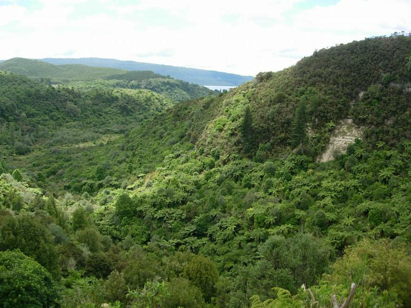
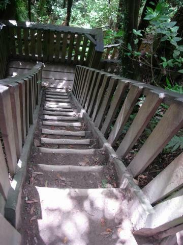
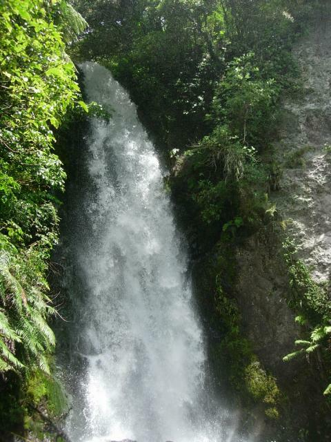
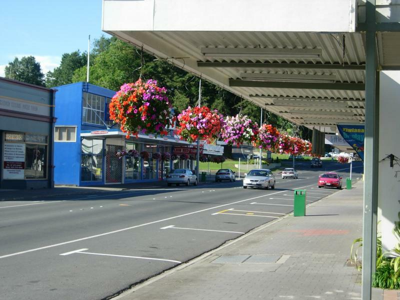

Buried Village
The village of Wairoa (and five others) were destroyed in the June 10, 1886 eruption of long-dormant Mt. Tarawera. The eruption took out the White and Pink terraces, two renouned silicate fans. "If I live to be 100, I'll never see anything more beautiful"--Letter posted by an English visitor the night before he died in the eruption.
Walking around the site, I found there was not much to see beyond some excavated artifacts. But the volcano created a gorgeous valley.

Valley floor

From top of crater


Only a few more steps, my precious.
Was dismayed to find out that I'd put on perhaps as much as 2" over Christmas. That's my top priority when I get back to Oz. The nice surprise was that my aerobic conditioning hadn't changed much. Was able to go racing up and down hills at all three volcanic sites in persuit of elusive sunlight to take photos.

Waterfall down side of crater
Waitamo Gloworm Cave

Otorohanga, a cool little town near Waitamo. This is in what's called Kings' Country, because it was the last Maori stronghold.
There's no photography in the caves, so I'll have to describe it. The glowworms hang from the ceiling, and extrude a fiber abot 8" long that looks like angel hair coated with honey. The glow attracts insects in the lightless grotto, which become stuck to the fiber. The worm sucks in the fiber, eats the insect, then spits out the fiber. Since insects are not all that plentiful underground, the worms also eat each other.
In an eleven-month lifecycle, the worms turn to flies. Since evolution spared the flies a mouth, they last at most 4 days. Many are eaten by other worms. The survivors lay thousands of eggs on the cave ceiling.
It's an amazing sight. It can only be compared to a night sky full of blue stars the size of the bulbs used to make electric fireflies in trees at Disneyland and elsewhere.